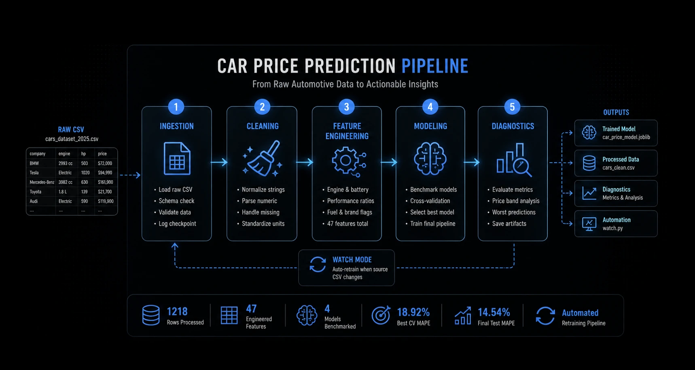
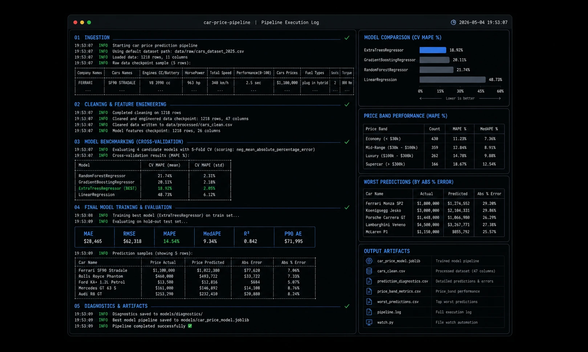
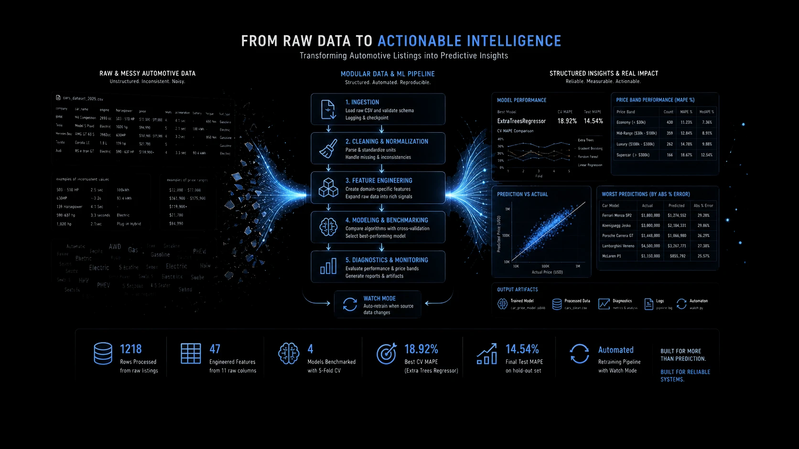

Introduction
In this project, I built a modular end-to-end machine learning pipeline that transforms messy automotive listings into a structured prediction system. Rather than focusing exclusively on prediction accuracy, the primary objective was to design a reproducible workflow capable of ingestion, cleaning, feature engineering, benchmarking, diagnostics, and automated retraining from a single evolving CSV source.
The Challenge
Real-world vehicle datasets are highly inconsistent: horsepower ranges, battery capacities, mixed engine units, irregular seat formatting, and price ranges all create significant preprocessing challenges. Building a usable system required converting unreliable raw listings into structured, model-ready intelligence.
The Approach
A modular Python architecture split across ingestion, cleaning, feature engineering, model benchmarking, diagnostics generation, and watch-based reruns — designed to simulate a production-style local data pipeline rather than a single notebook experiment.

Process
01
Data Ingestion
Loaded raw automotive CSV data dynamically, with configurable environment paths and checkpoint logging.
02
Cleaning & Normalization
Parsed inconsistent strings into structured variables such as engine displacement, battery capacity, horsepower, torque, acceleration, and pricing ranges.
03
Feature Engineering
Expanded 11 raw columns into 47 engineered attributes, including performance ratios, fuel classifications, and structural indicators.
04
Model Benchmarking
Compared Random Forest, Gradient Boosting, Extra Trees, and Linear Regression through cross-validation before selecting the strongest candidate.
05
Diagnostics & Monitoring
Generated prediction diagnostics, worst-case prediction analysis, price-band metrics, and optional file-watch automation for reruns.
Key Findings
47 Features
Expanded from 11 raw columns through structured cleaning and feature engineering
Extra Trees
Best-performing model among 4 benchmarked regressors
Watch Mode
Pipeline can automatically rerun when source data changes

Results
1218
Rows ingested and transformed from raw automotive listings
18.92%
Best cross-validation MAPE from selected model candidate
14.54%
Final hold-out MAPE after full pipeline training
While predictive performance varied significantly across vehicle segments — particularly in heterogeneous luxury and mid-tier categories — the project successfully demonstrated that robust preprocessing and structured orchestration often matter as much as final model choice.
More importantly, this system showed how a single raw CSV can evolve into a modular machine learning workflow with reproducible outputs, diagnostics, and automated retraining behavior — emphasizing systems design over isolated prediction.
